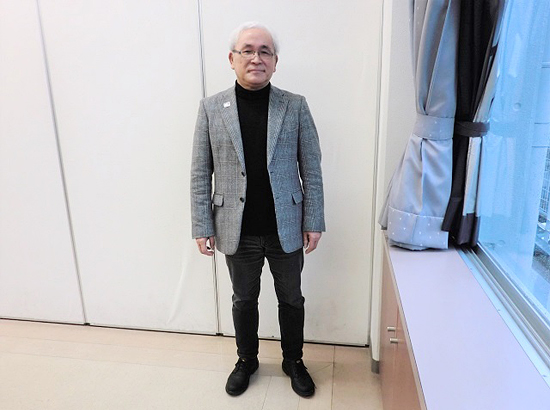
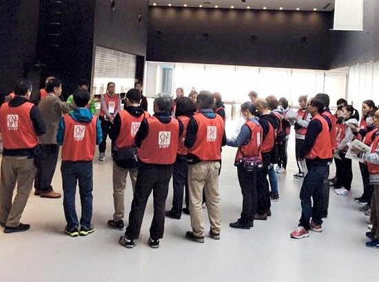

被災地のいま 宮城県・福島県の現状
「被災地のいま」 ～宮城県仙台市～
第79回 2020年3月5日 ―地域とスポーツ―
スポーツボランティアの“人と経験”をつないでいく
宮城県仙台市／市民スポーツボランティアSV2004
「市民スポーツボランティアSV2004」（以下SV2004）は、16年前、仙台・宮城で開催されるスポーツをサポートしようと地域の人々が集まって結成した団体です。楽天イーグルスの試合や仙台国際ハーフマラソン大会など、様々なスポーツイベントにボランティアとして関わっています。
代表理事の泉田和雄さんは、発足以来、仲間とともにスポーツボランティアの輪を広げ、学び合う活動を続けてきました。その活動が一旦ストップしたのが東日本大震災でした。
「すべてのスポーツが休止し、SV2004の仲間も多くは被災者として自分の生活再建に頑張るしかありませんでした」。活動に戻るきっかけとなったのは「4月29日復興デー」でした。東北新幹線と仙台市地下鉄再開に合わせ、ベガルタ仙台と楽天イーグルスのホーム開幕戦が行なわれたのです。
さらに5月、SV2004は緊急の東北スポーツボランティアサミットを開催しました。「スポーツボランティアは震災では無力ですが、スポーツには人を笑顔にし、元気にする力があります」。そこで「スポーツで笑顔を未来に」という宣言を出し、特に子どもたちのために何ができるかを話し合いました。
7月、楽天イーグルスの球場でプロ野球のオールスターゲームが開催され、被災地から3,000人を超える子どもたちが招待されました。SV2004などのメンバーは全国から駆け付けた100人以上のボランティアとともに招待された子どもたちの対応をしました。
昨年は岩手県釜石市でラグビーワールドカップが実施され、泉田さんも地元の人たちの活動を支援するため何度か足を運びました。「釜石の方々は“震災の後、ワールドカップという目標が先にある、ラグビーを見に世界からお客さんが来ると思って、前を向くことができた”と言っていました。大会成功のために動いた釜石の方々の“人と経験”はレガシー（遺産）となって今後につながっていくでしょう。それはどこの地域も同じです」。
今年はオリンピック・パラリンピックイヤーです。宮城でも春に聖火リレー、夏には宮城スタジアムでサッカー予選が行なわれます。SV2004の会員もボランティアとして参加する予定です。
「これを機にスポーツボランティアを経験する方が増えるでしょう。そうした方々が、オリンピック・パラリンピックが終わっても地域のスポーツのために活動をしていけるような流れをつくれたら嬉しいですね」。

▲「スポーツボランティアは楽しいからこそ続けていける」と泉田和雄さん。「長時間のエコ活動や観客対応など大変なことも多いのですが、その場にいられる幸せというのがある」と言います。

▲SV2004の会員は現在137名。スポーツボランティアの依頼も年々増えています。写真は昨年11月仙台市体育館で開催されたバレーボールVリーグ男子公式戦でのミーティング風景。（提供：SV2004）
2019年3月21日、みやぎ生協はコープふくしま・福島県南生協と組織合同しました。このコーナーのタイトルも「被災地のいま みやぎ生協・コープふくしまから宮城・福島のいまをお伝えします」に変え、福島県の現状についてもお伝えしていきます。
前の記事
第78回「被災地のいま ～宮城県女川町～」（2020年2月5日）